Nanpu Terrace — 南風テラス
A Little Escape. 数寄屋職人がこだわった、大人ふたりのための離れ
民宿 南風荘から徒歩1分。木の香りに包まれる一棟貸しの離れです。
1〜2名様向け。静かな個室で、自分たちだけのんびりした時間をお過ごしください。

Bath
海を眺めながら、露天風呂でゆっくり
前島の高台から瀬戸内海を一望する露天風呂。
昼は青い海と島々を、夜には星や月を眺めながら、
誰にも邪魔されないお風呂の時間をお過ごしください。
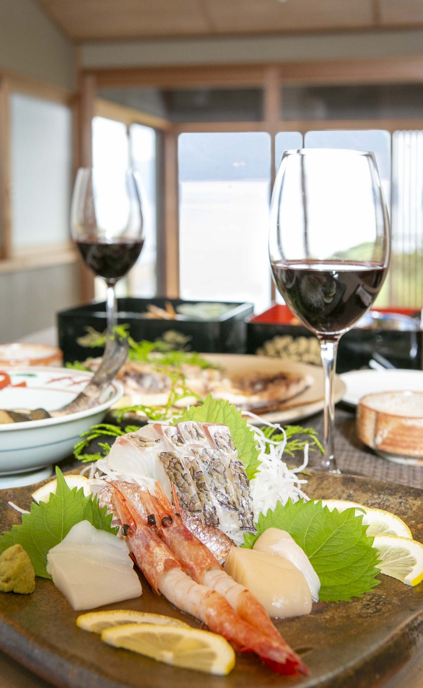
Dining
選べる、2つの食事スタイル
徒歩1分の本館特製の海鮮料理をテラスへお運びする
「お部屋食」スタイルと、本館で豪華会席をいただく
スタイルからお選びいただけます。ワイン片手にゆったりと。
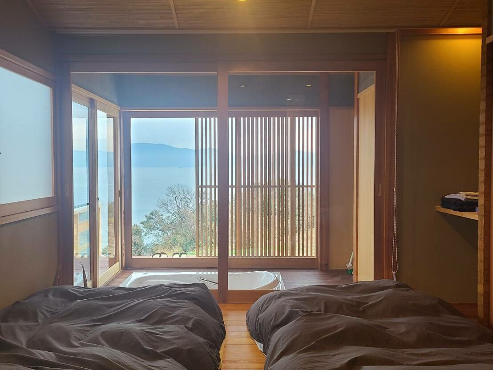
Room
木の香りに包まれる、静かな寝室
数寄屋職人がこだわって作り上げた建物。
天然木のフローリングに、寝室にはローベッドを備えています。
落ち着いた照明の下、ゆっくりとおくつろぎください。
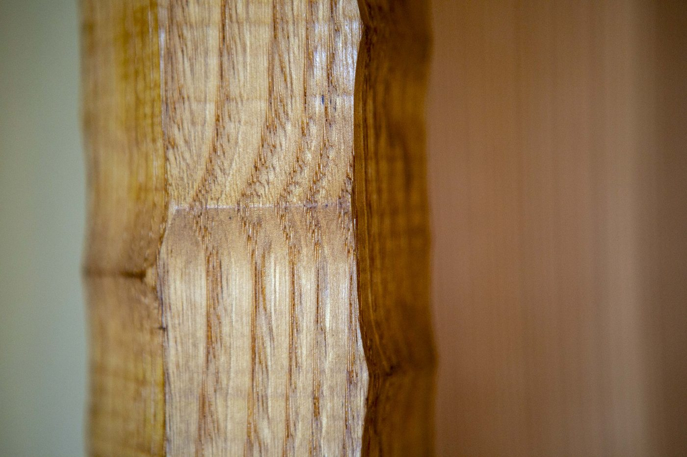
Craftsmanship — 数寄屋建築
数寄屋建築を手がける大工のこだわり
数寄屋建築とは、茶室などの建造に用いられる
日本古来の建築様式。便利さや豪華さよりも、
周囲の自然との調和やバランス、ワビサビを大切にします。
南風テラスは使用する木材の質・種類にこだわり、
建物の箇所ごとに適した木材を選んで作られた特別な離れです。
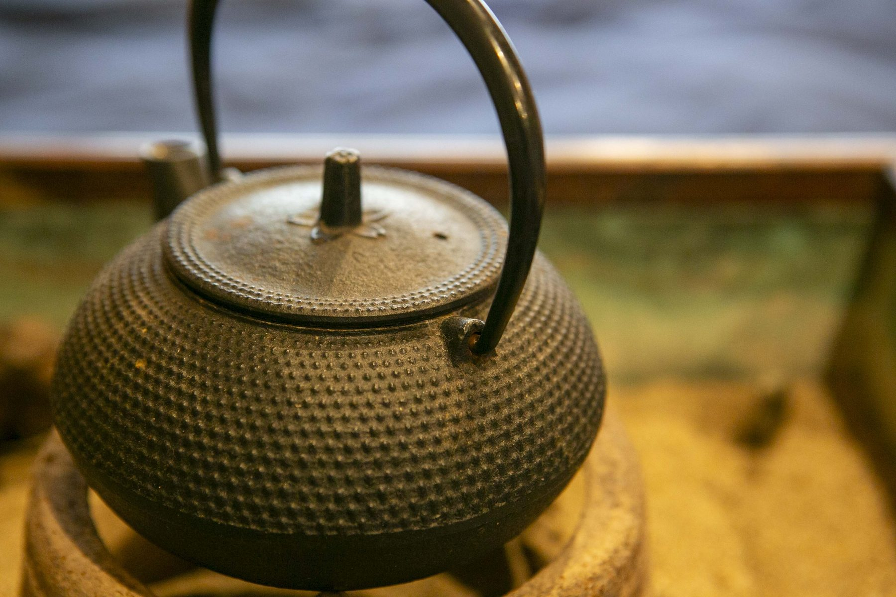
ウェルカムドリンクをご用意
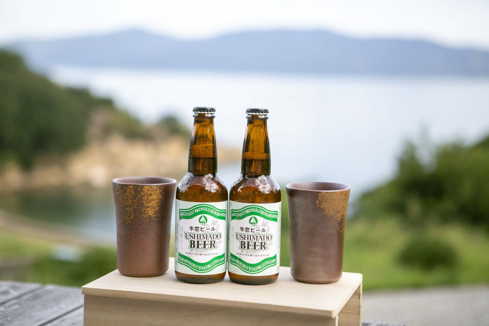
冷蔵庫に牛窓ビール・地酒・ソフトドリンクをご用意
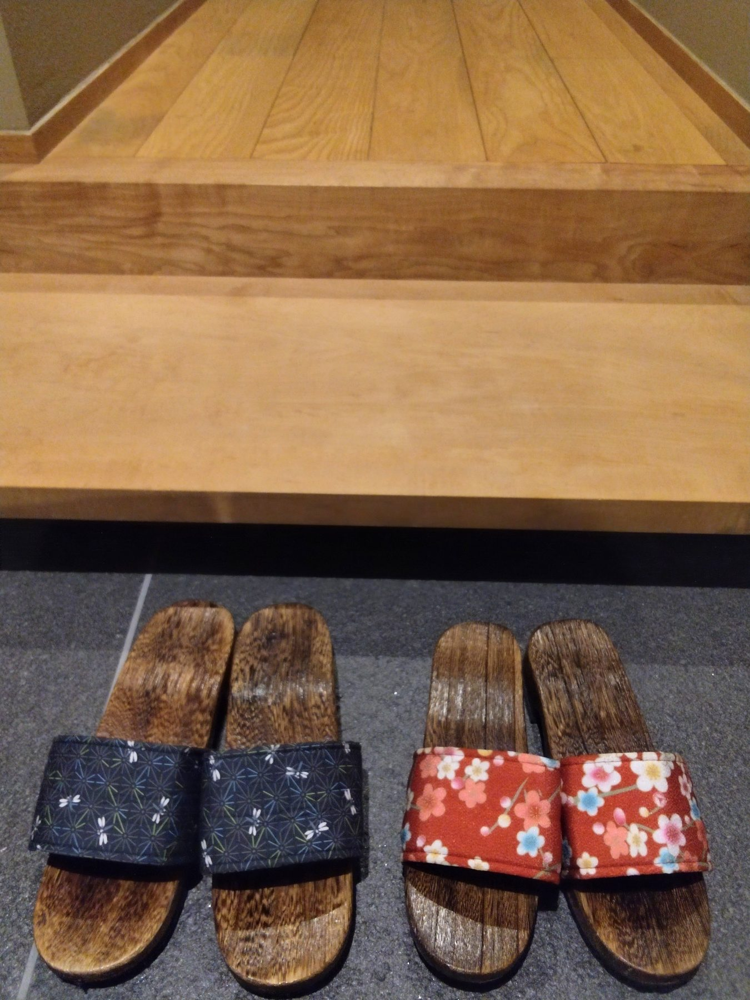
おふたりで、島の夜をゆっくりと
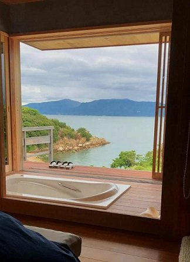
扉を開ければ、一面の海
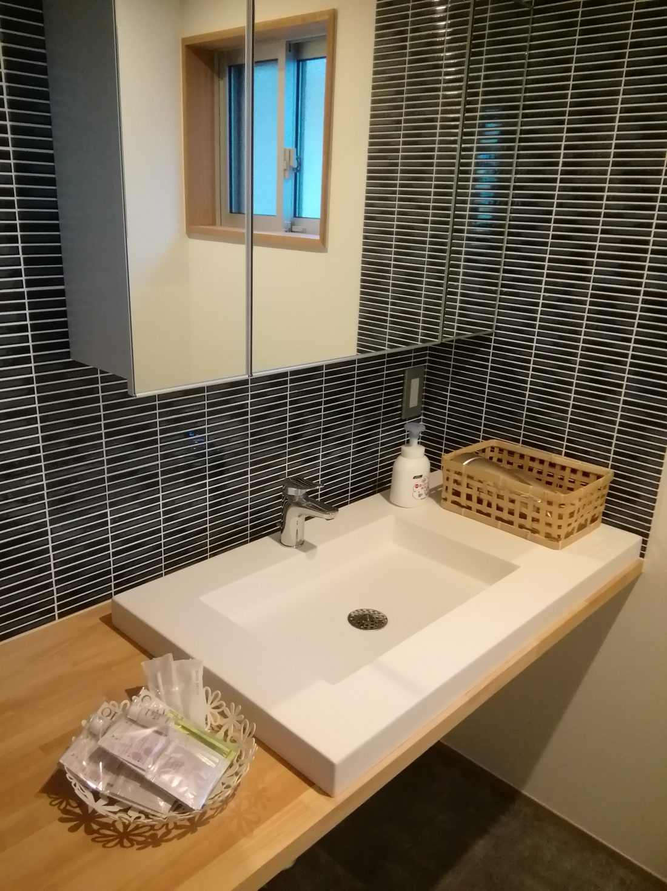
洗面台にはオリーブのアメニティを
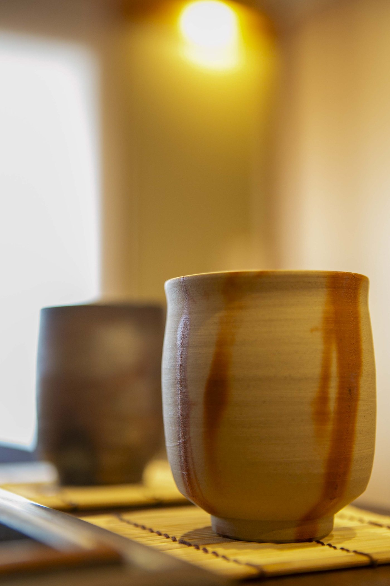
備前焼のお茶セットで、ひと休み
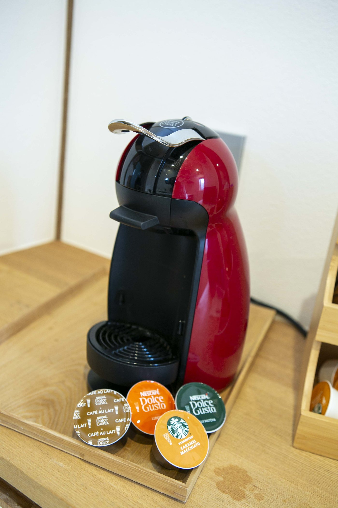
コーヒーメーカーもご用意しています
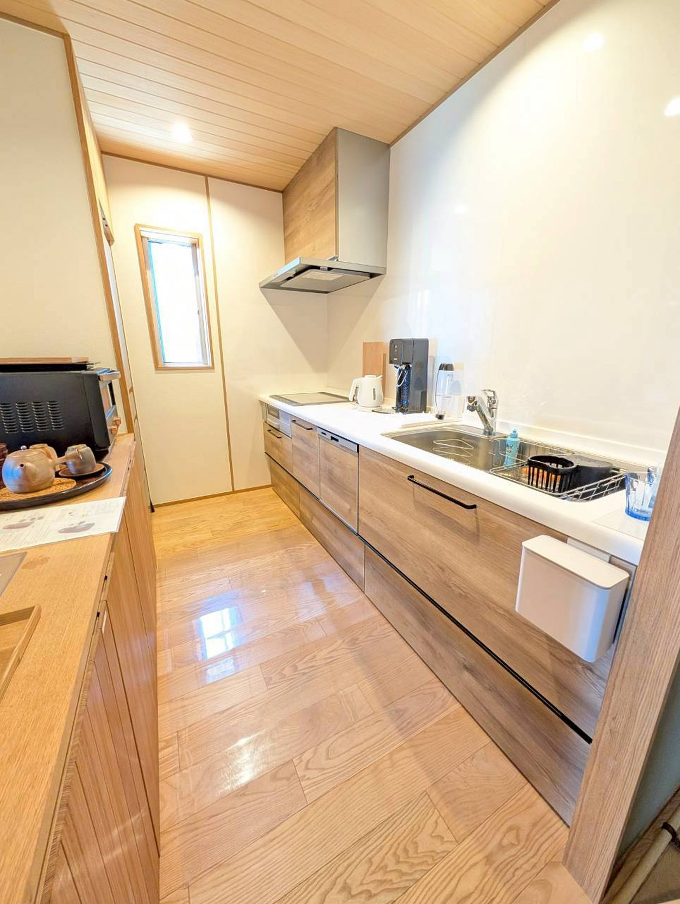
調理器具一式そろったキッチン
お風呂・アメニティ
シャワーブース
オリーブ入浴剤
オリーブシャンプー・ボディソープ
浴衣・タオル
キッチン
冷蔵庫
IHコンロ
オーブンレンジ
炊飯器
湯沸し器
炭酸水メーカー
調理器具一式
お部屋・その他
天然木フローリング・ローベッド
縁側
火鉢
加湿器・ヒーター
Bluetoothスピーカー
洗濯機・お手洗い
無料Wi-Fi
無料駐車場
※建物内に2箇所、1段の段差がございます。
※アメニティは牛窓・日本オリーブ株式会社のオリーブ製品をご用意しています。
定員2名
チェックイン15:00〜
チェックアウト11:00
全館禁煙
ペット不可
砂浜徒歩5分